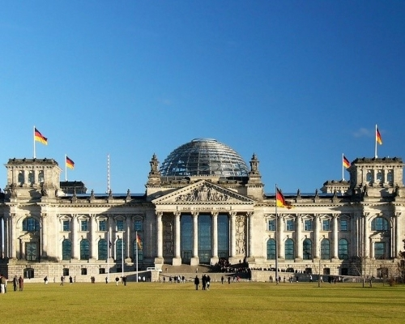
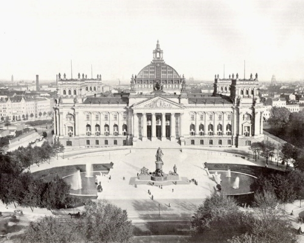
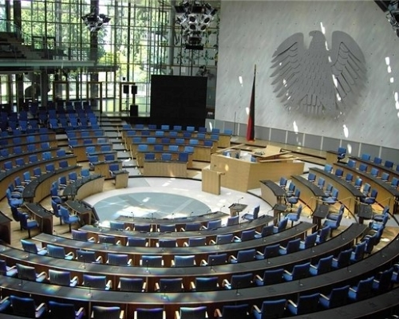
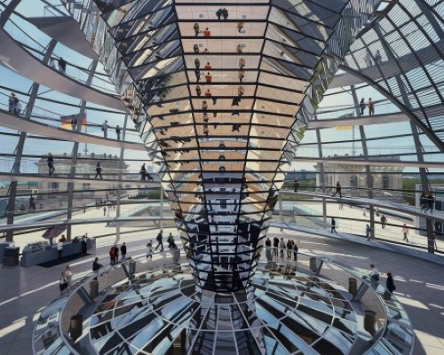

제국의회의사당
Reichstag Building
- 
- 
- 
- 
주소
정보
꿀팁
교통
운영 시간
예약
Platz der Republik 1, 10557 Berlin Germany, 독일
독일 베를린에 있는 과거의 독일 제국의회 의사당으로 현
재는 독일 국회 의사당으로 사용되고 있다.
독일 국회의사당 건물은 정치적 의사 결정이 벌어지는
장소 그 이상의 의미가 있다. 비록 이 곳은 과거 독일 민
주주의가 좌절된 장소였지만 통일 후 리모델링을 거쳐
새로운 독일의 민주주의의 상징으로 탈바꿈했으며, 상부의
유리 돔은 베를린의 랜드마크로 자리잡았다.
돔에서 본회의장을 내려다 보는 것도 가능하다.
회의장보다 방문객이 오가는 돔이 더 윗부분에 위치하고
있는 것은 국민이 정부보다 위에 있다는 것을 뜻한다.
브란덴부르크 문과 100번 버스로 연결되어있음!
예약은 필수!!
온라인 예약은 매진이 빠르다
국회행사시 입장이 불가하므로 알아보고 가기!
돔에서 베를린 야경을 보는 것도 아주 멋있다
지하철, 버스
매일 : 오전 8시 ~ 오후 11시
입장 시간 : 매 15분 마다(마지막 입장은 오후 10시)
국회행사시 입장 불가
온라인과 현장예약(무료)